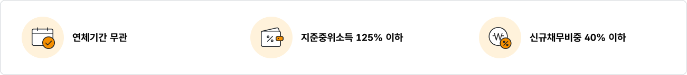

소액대출
9,999
신용회복위원회에서 채무조정 성실상환자를 대상으로 생활안정자금, 학자금, 운영자금 등 긴급자금을 직접 지원하는 제도입니다.

지원대상
- 신용회복위원회로부터 채무조정을 받아 6개월 이상 성실하게 상환하고 있거나 최근 3년 이내 상환을 완료한 분
- 채무자회생 및 파산에 관한 법률에 의거 법원으로부터 개인회생 변제계획 인가를 받아 12개월 이상 성실하게 상환하고 있거나 최근 3년 이내 상환을 완료한 분
- 소액금융기금 출연 주체가 출연목적에 따라 지원대상자로 별도 지정한 분
지원불가대상
- 대출금을 상환할 수 있는 소득이나 상환여력이 부족한 분
- 신용정보조회표상 연체정보가 등록된 분
- 보유재산이 과다한 분
- 채무조정(개인회생) 이후 신규로 발생한 채무가 과다하신 분
- 최근 6개월 이내 신규 채무가 발생하신 분
상기사항 외에 기타 부적격 사유 및 내부 심사기준에 따라 대출이 제한될 수 있습니다.
지원내용
소액대출은 생활안정자금이나 학자금, 시설개선자금, 운영자금, 고금리차환자금 등의 용도로 지원합니다.
| 구분 | 설명 | 비고 |
|---|---|---|
| 신청권자 | 채권자, 채무자 및 채무자에 준하는 자(법정대리인, 파산회사 대표자, 이사, 지배인) | |
| 관할법인 | 주소지를 관할하는 지방법원 본원 | |
| 파산원인 | 지급불능, 지급정지, 채무초과의 상태 – 은행대출, 카드사용, 사채 등 원인을 불문하여, 신용 불량 여부도 상관없으며, 금액이 많고 적음도 상관없습니다. | |
| 신청장소 | ㅇㅇ지방법원(파산과 또는 민사신청과) 접수계 | |
| 파산신청서 | ㅇㅇ지방법원(파산과 또는 민사신청과) 접수계에서 배부합니다. |
대출한도 및 조건
| 구분 | 설명 | 비고 |
|---|---|---|
| 신청권자 | 채권자, 채무자 및 채무자에 준하는 자(법정대리인, 파산회사 대표자, 이사, 지배인) | |
| 관할법인 | 주소지를 관할하는 지방법원 본원 | |
| 파산원인 | 지급불능, 지급정지, 채무초과의 상태 – 은행대출, 카드사용, 사채 등 원인을 불문하여, 신용 불량 여부도 상관없으며, 금액이 많고 적음도 상관없습니다. | |
| 신청장소 | ㅇㅇ지방법원(파산과 또는 민사신청과) 접수계 | |
| 파산신청서 | ㅇㅇ지방법원(파산과 또는 민사신청과) 접수계에서 배부합니다. |
- 개인회생 성실상환자 및 새희망힐링론 대상자의 경우 별도 한도가 적용됩니다. (개인회생 성실상환자 최대 700만원, 새희망힐링론 대상자 최대 500만원)
- 대출금리는 채무조정 변제금 상환기간에 따라 달라지며 금융취약계층의 경우 해당 금리의 70% 적용 금리로 우대 가능합니다.
(서류 증빙 필수) 기초수급자, 장애인, 장애인부양자, 만 70세 이상자, 만 70세 이상 노부모 부양자, 한부모가족, 다자녀부양자 - 대출 신청일 기준 2개월 이내 신용교육원(www.educredit.or.kr) 온라인 교육 이수자의 경우 0.1%p 우대금리가 적용됩니다.
지원내용
소액대출은 생활안정자금이나 학자금, 시설개선자금, 운영자금, 고금리차환자금 등의 용도로 지원합니다.
| 구분 | 설명 | 비고 |
|---|---|---|
| 신청권자 | 채권자, 채무자 및 채무자에 준하는 자(법정대리인, 파산회사 대표자, 이사, 지배인) | |
| 관할법인 | 주소지를 관할하는 지방법원 본원 | |
| 파산원인 | 지급불능, 지급정지, 채무초과의 상태 – 은행대출, 카드사용, 사채 등 원인을 불문하여, 신용 불량 여부도 상관없으며, 금액이 많고 적음도 상관없습니다. | |
| 신청장소 | ㅇㅇ지방법원(파산과 또는 민사신청과) 접수계 | |
| 파산신청서 | ㅇㅇ지방법원(파산과 또는 민사신청과) 접수계에서 배부합니다. |
신청서류
| 구분 | 자금용도 | |
|---|---|---|
| 생활안전자금 | 채권자, 채무자 및 채무자에 준하는 자(법정대리인, 파산회사 대표자, 이사, 지배인) | |
| 학자금 | 주소지를 관할하는 지방법원 본원 | |
| 고금리차환자금 | 지급불능, 지급정지, 채무초과의 상태 – 은행대출, 카드사용, 사채 등 원인을 불문하여, 신용 불량 여부도 상관없으며, 금액이 많고 적음도 상관없습니다. | |
| 시설개선자금 | 영세자영업자의 사업장 집기, 비품, 시설물의 구입 및 교체, 보수자금 | |
| 운영자금 | 영세사업자의 원재료 구입 등의 운영자금 |
신청서류는 채무현황, 재산보유현황 등 채무자의 상황에 따라 달라질 수 있으므로 상담시 자세히 안내 받으시기 바랍니다.
※ 비대면 소액대출은 별도의 서류 제출없이 스크래핑 기술을 통해 확인하며, 자영업자인 경우에만 소득서류를 제출합니다.
※ 비대면 소액대출은 별도의 서류 제출없이 스크래핑 기술을 통해 확인하며, 자영업자인 경우에만 소득서류를 제출합니다.
신청방법
비대면 소액대출 신청 (사이버상담부 홈페이지, 신용회복위원회 앱)
공동,금융,민간인증서를 소지하고 계신 경우 신용회복위원회 사이버상담부(cyber.ccrs.or.kr) 를 통해 인터넷으로 상담 및 신청하실 수 있습니다.
콜센터
1600-5500
상담소 찾기
팝업보기 >
인터넷 상담신청
바로보기 >